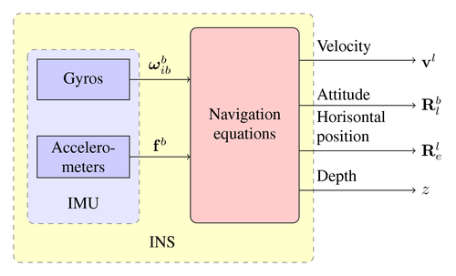

Système de
suivi inertiel

L'objectif
de ce projet est de pouvoir suivre une personne dans un environnement
intérieur. À cette fin, un système de suivi inertiel (ITS) est proposé et la
faisabilité de sa mise en œuvre est étudiée. La structure de l'ITS proposé est
sous forme de matériel et de logiciel, excluant l'utilisation du GPS. Ce projet
se concentre sur le calcul de la position et de l'orientation. Tout d'abord,
les signaux d'accélération bruts sont filtrés par les méthodes du filtre de
Kalman. En mettant l'accent sur le filtre de Kalman, la position est obtenue
avec une grande dérive. Enfin,
l'orientation est calculée en appliquant le filtre de Kalman pour pouvoir
soustraire l'accélération gravitationnelle et obtenir une accélération sans
gravité
Pour plus
d'informations :
Click here